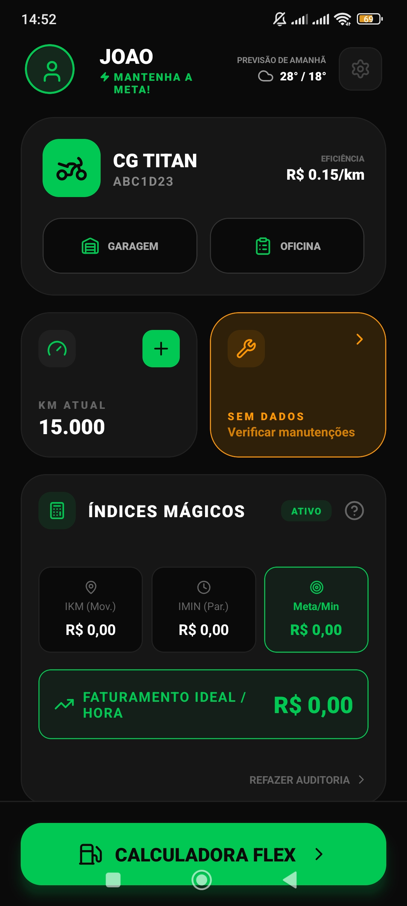
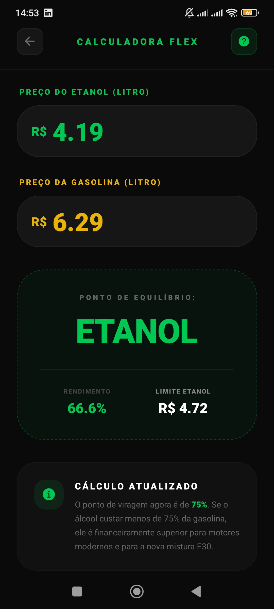
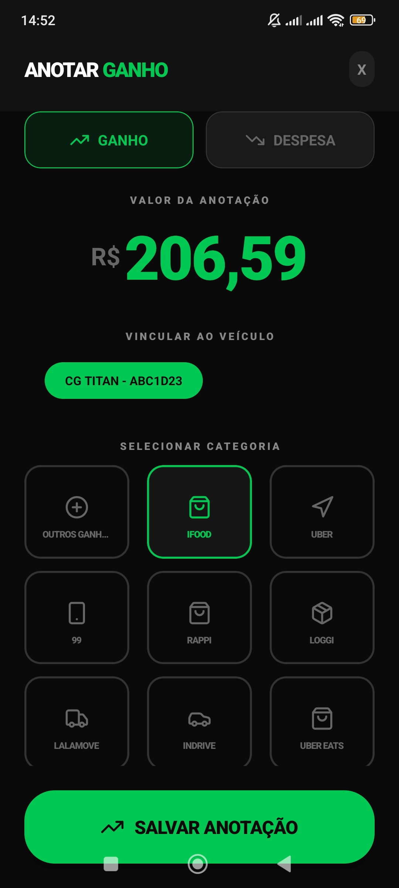
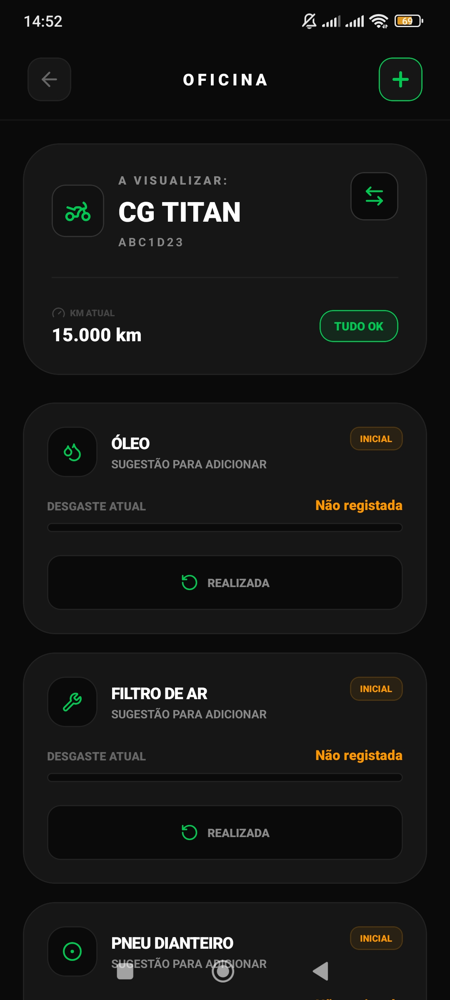
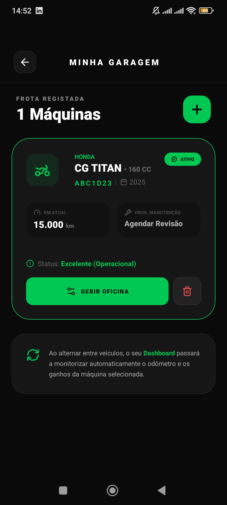
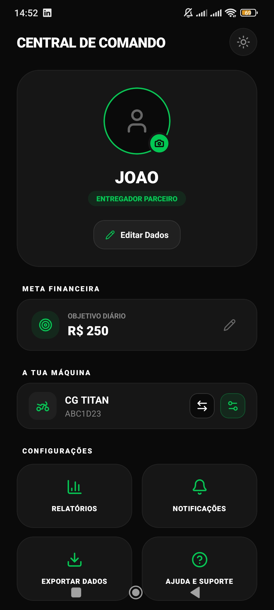
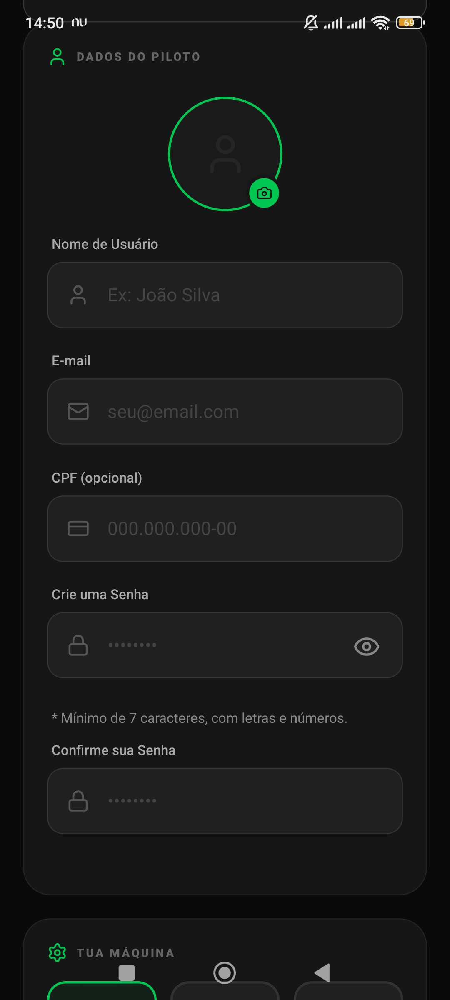

Motoboys e entregadores
Registre ganhos por plataforma, custos do dia e manutenção da moto com uma rotina simples.
Para quem roda, entrega e precisa fechar a conta
Controle seus ganhos, custos e corridas em um só lugar.
O app feito para motoristas, entregadores e profissionais autônomos entenderem o lucro real de cada corrida antes que o dinheiro suma no combustível, manutenção e despesas do dia.

Para quem é o KORRE
Registre ganhos por plataforma, custos do dia e manutenção da moto com uma rotina simples.
Compare corridas, acompanhe combustível, desgaste e lucro real para decidir melhor.
Organize despesas, metas, backup e relatórios sem depender de planilhas soltas.
Funcionalidades
Calcule o valor ideal por quilômetro, custo por tempo e lucro estimado antes de aceitar uma corrida.
Acompanhe ganhos, despesas, categorias e margem real com uma leitura rápida do seu desempenho.
Controle veículos, peças, revisões e alertas para não ser pego de surpresa.
O app prioriza armazenamento local e permite exportar seus dados quando precisar guardar uma cópia.
Telas do app
Assim que os prints forem adicionados, esta seção pode exibir as telas reais de dashboard, calculadora, finanças e manutenção.
Visão central da rotina, veículo ativo e indicadores.

Comparação rápida para decidir combustível com clareza.

Registro direto por valor, veículo e categoria.

Acompanhamento de óleo, filtros, pneus e revisões.

Controle de frota, quilometragem e veículo ativo.

Meta diária, configurações e exportação de dados.

Cadastro inicial do piloto e da máquina.
Como funciona
Informe consumo, custos e dados básicos para montar sua base.
Adicione corridas, combustível, alimentação e manutenção.
Use os indicadores para entender margem, meta e custo real.
FAQ
Sim. O foco do app é organizar os dados localmente no aparelho, com recursos de backup para quando você quiser guardar uma cópia.
Não. O KORRE ajuda na organização e nos cálculos do dia a dia, mas as decisões fiscais e financeiras continuam sendo do usuário.
Ela ajuda a estimar custo por quilômetro, custo por tempo e lucro de uma corrida, evitando decisões no escuro.
Comece pelo controle
Baixe o KORRE e acompanhe seus ganhos, custos, manutenção e metas com uma visão feita para a rotina de quem está na rua.
Baixar no Google Play